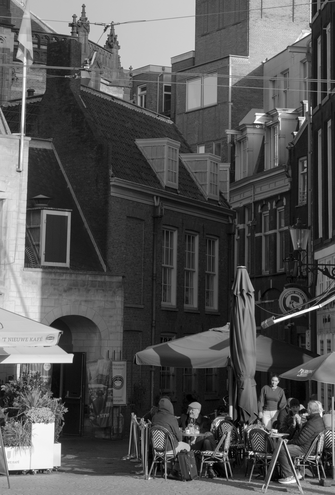
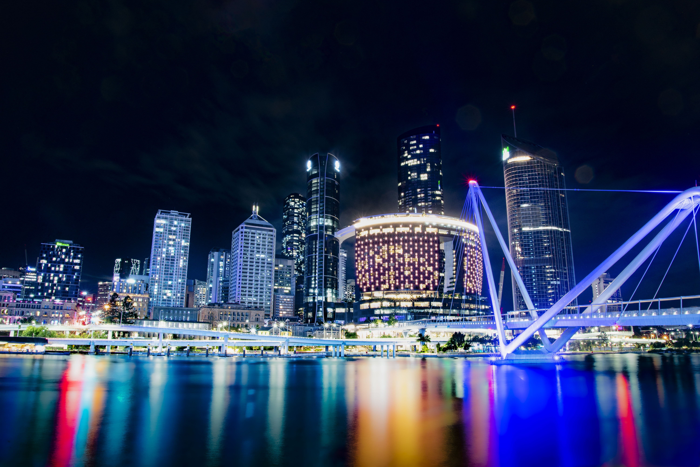
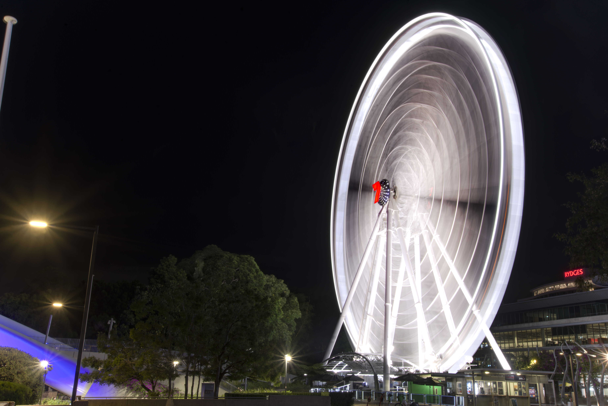

About me
I am a amature photgrapher who picked up photography in late 2024; since then I have been reguarly taking photos and improving.
Over the last few years I have shifted from just taking photos to traying to tell a story and show the world how I see it.
The photos I take.
Like many amateur photographers, I explore multiple types of photography.
I mostly dabble in astro, landscape, architecture, and nature. Even so, I prefer to focus on images that tell a story, even if that story is not immediately obvious.


How I want to grow.
Right now, I am looking to do more portraiture and documentary photography. My hope is to volunteer at places such as YWAM and my church to develop my portfolio and technical skills.
The inspiration, process and gear.
Inspiration
My photography is inspired by the natural beauty all around us. Whether it's mountains, animals, plants or urban landscapes, I aim to capture the moment as I see it.
I do not follow that many photographers, though I should. One photographer I really admire is Hunter Creates Things, a very talented street, portrait, and landscape photographer who runs a YouTube channel. His work aims to show moments of connection with strangers, which I find really authentic. He has also mastered lighting and composition in his work, teaching me a lot about how to capture the light I see.
My Process
I almost exclusively shoot in RAW format where I have the maximum flexibility in editing. I of course try to get the photo right the first time but editing allows me to really dial in the photo.
When shooting, I try to take just 5 seconds to look around and compose the shot based on lighting and composition. Those 5 seconds can go a long way in changing how the photo turns out.
Most of the time I shoot in manual, but lately I have been shooting in aperture and shutter priority mode. After 3 years, I finally learned about the exposure compensation feature on my camera.
Gear & Equipment
Almost all of the gear I use is actually my dad's, which I have unintentionally taken over. I used to use a Nikon D610, which was an excellent camera but had problems with the mirror sticking. That D610 has been replaced with a new Z5 II with lightning-fast autofocus.
I use the same lens from the D610 with the new Z5 II with an adapter. I have been surprised by how many different kinds of photography I can do with a 24-85mm and a 70-200mm lens. The 200mm has particularly impressed me with deep-space photos of nebulas.
Despite the good gear I have access to, I believe knowing your camera and practicing regularly are much more important than having new equipment. An older camera like the D610 can go far beyond my abilities.
Other equipment includes a nice travel Manfrotto tripod and a 3D-printed extension tube for some of my macro shots. This gear has gotten me really far, proving that gear is not what makes you good.
Featured Work
.jpg)
Landscape
Landscapes can reveal beauty in places that are both obvious, such as grand mountains, and more ordinary, such as the landscapes we overlook every day. People, including me, often dismiss the landscapes around where they live as too boring, but with patience and skill, you can capture the beauty of the where you live in.
.jpg)
Astro
Astrophography fills me with awe of the universes and the how much there is beyond all we know.

Documentary
The photos is of the Memory Pool in simsonweg, Berlin remembering the murdered Sinti and Roma people. The photo perposly had dead space showing the hole left behind by the victums of the Nazi genocide.
My Photography Categories
.jpg)
.jpg)
.jpg)
.jpg)

.jpg)
.jpg)
.jpg)

.jpg)
.jpg)


.jpg)
.jpg)
.jpg)
.jpg)




.jpg)
.jpg)

-edit-20260322082044.jpg)
.jpg)


.jpg)


.jpg)

.png)


Thanks for Visiting!
My intention was to demonstrate some of my work and share my passion for photography. I hope you enjoyed some of the photos!